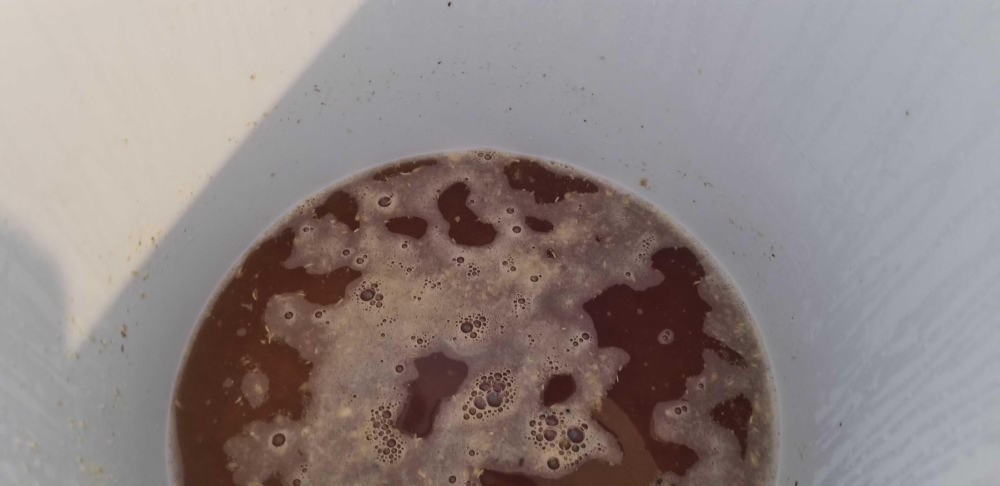
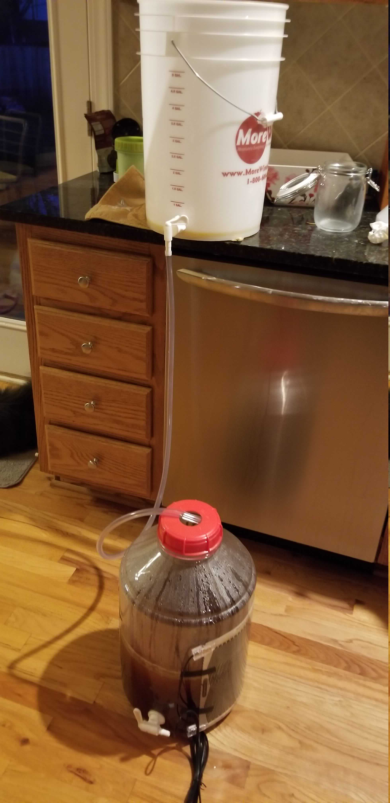

Milkshake and smoothie IPAs have been trendy on the coasts for a couple of years. Unfortunately, many of these beers haven’t made it to my region of the country, so I took a stab at making one.
For those who haven’t had a chance to try one of these beers, its is basically a New England IPA with a larger body, typically by supplementing the wort with lactose. NE IPAs often utilize wheat (though, not always), and low flocculating yeast to produce a nice haze.
For this beer I wanted to emphasize mango, so the only hop used is Citra. After looking around for an appropriate yeast I landed on Omega Yeast OYL-200 for tropical IPAs. This yeast brings out fruity notes, particularly mango and pineapple, so this brew includes some condensed pineapple juice as well.
Recipe: Pineapple Mango Milkshake IPA
General Information
| Batch Size | 3 Gal |
| Batch Type | All Grain |
| Expected OG | 63 |
| Actual OG | 62 |
| Expected FG | 10 - 11 |
| Actual FG | 12 |
| ABV | 6.43% |
| IBU | 41 |
| Mash | Single Infusion, 60 min |
| Boil | 60 min |
Ingredients
General Brew Ingredients
Ingredients are per 1 gallon where applicable
| Amount | Ingredient |
|---|---|
| 1.7 lb | 2 row malt |
| 0.6 lb* | flaked oats |
| 0.3 lb | wheat malt |
| 0.125 lb | lactose |
| 0.501 oz | Citra Hops 12.5% AA (Total) |
| 1/2 tab | whirlflocc |
| Secondary Fermentation | |
| 1 can | Condensed Pineapple Juice (frozen) |
* Due to a mistake when ordering ingredients this should have been 0.3 lbs of flaked oats and 0.3 lbs of flaked wheat, but only ended up with the oats.
Hop Schedule
Hop quanities are for 1 gallon batch.
| Boil Time | Amount | Type |
|---|---|---|
| 60 min | 0.167 oz (1/3 of total) | Citra |
| 0 min | 0.167 oz (1/3 of total) | Citra |
| Dry | 0.167 oz (1/3 of total) | Citra |
Mash
| Type | Single Infusion |
| Duration | 60 min |
| Sparge | Batch |
| Water / Grist | 1.5 |
| Target pH | 5.38 |
| Target Mash Temp | 158°F |
| Strike Water Temp | 171°F |
| Actual Mash Temp | 158°F |
| Strike Water Volume | 2.5 gal |
| Sparge Water Volume | 3.75 gal |
| (Strike) Water Treatment | |
| Gypsum | 6.5 g |
| Calcium Chloride | 5 g |
Strike Water Additions
I typically use Reverse Osmosis (RO) water for brews. Since there is minimal mineral content in RO water, some additions are needed to achieve the desired mash pH - for this beer Calcium Chloride and Gypsum were utilized to add back in the necessary calcium for enzyme activity and desired sulfate to emphasize the hops.
| Ca+2 | Mg+2 | Na+ | Cl- | SO4-2 | Alkalinity | Residual Alkalinity |
|---|---|---|---|---|---|---|
| 121.4 | 0.0 | 0.0 | 100.7 | 154.5 | 2.5 | -84.1 |

The first runnings were run back through the grain bed a few times for clarity, although this wasn’t a major concern in this low-flocullating and dark beer.
Boil
Boil Schedule
| Time Remaining In Boil | Addition |
|---|---|
| 60 min | 0.501 oz Citra Hops (bittering) (1/3 of total) |
| 5 min | 1/2 tab Whirlflocc |
| flameout | 0.501 oz Citra Hops (aroma) (1/3 of total) |
Fermentation
Being essentially a tropical IPA, this was an interesting fermentation. The Omega OYL-200 yeast used required a super high fermentation temperature - 82° to 85°F . To accomplish this a fermwrap in conjunction with an inkbird controller were used to regulate the temperature. Luckily my house isn’t naturally in the 80s, so no cooling was needed for the regulator.
The primary was allowed to ferment for 4 days, between days 3 and 4 the gravity only reduced another 1-2 points, before adding the can of pineapple juice. I don’t have much racking equipment, or even extra carboys or fermentation bucks, so I dumped the can of thawed juice in the bottom of my bottling bucket, racked to the bucket and back to the carboy.
Note that the juice was heated to ~85°F in a sanitized pot before the addition.

The secondary was allowed to ferment for 8 days, until the gravity stopped dropping for two consecutive days (again), with a final gravity of 12.
Kegging
After the secondary was complete the beer was transferred to a keg and force carbed. I went ahead and just rolled the keg for several minutes to carb it up. With the transfer an additonal 0.501 oz of Citra Hops were added to the keg.
I accidentally over carbed this one for a bit, probably rolled it a bit too long. This was easy enough to resolve by removing the CO2 tank from the equation and de-gassing the keg every few hours for a day or so.
Result
The initial tasting of this, a few days after carbing, was taken at room temperature, which was low 60s. The later tasting was taken after being chilled for several hours, so probably closer to low 40s.
Appearance
The beer turned out a bit darker than expected, although given some light the suspended yeast is visible.
Aroma
Shortly after kegging the beer had a clear tart aroma from the pineapple and a hint of grassy citrus. After a few weeks the tart aroma pulled back and more mango started to peek through.
Flavor
Again, initially, this was a quite tart beer. The sweetness comes through in the finish along with the mango. After a few weeks in the keg the tartness started to clear out but a classic IPA bitterness is retained, balancing well against the remaining mango.
I was a bit surprised that the lactose was not immediately obvious, but we held back on the lactose addition to avoid the sickly-sweet that appears in some similar beers.
Mouthfeel
This beer approaches a full mouth feel but doesn’t quite reach it. I would like it to fill out a little bit more. The second tasting did seem a little fuller, but not significantly so. I doubt this was caused by chilling the beer, but may be a result of conditioning a bit longer.
Things To Do Better
Overall, pretty pleased with this beer. The water treatment seemed to work for dropping the mash pH, resolving issues from the previous brew. This beer, or one similar, will probably make an appearance in the future.
Mouthfeel
The mash temperature was difficult to achieve, and I suspect the temperature didn’t remain for very long. First step to bumping this mouthfeel up is resolving this temperature issue, primarily by bumping the strike water temperature a hair higher.
Additionally, the lactose is meant to add some fullness on this brew. Since the lactose was not overpowering I would strongly considering adding a little more to the next batch, if not straight to what is left in the keg right now.
Dry Hopping
I was hopping to get a bit more mango aroma with the hop additions, and will probably double the dry hop additions in the next batch. Again, this is still fixable with the remaining beer, and may give it a shot before finishing the keg.